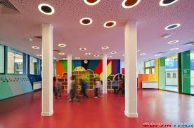
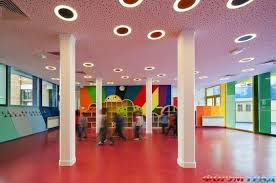

Поздравляем с Днём рождения!
Кирилл Радиевский
Виктория Храновская
Алексей Ванчук
ГУО "Детский сад г. Осиповичи №6"

Кирилл Радиевский
Виктория Храновская
Алексей Ванчук

9 мая

1 июня
О том, что он устал, хочет сказать вам ваш ребенок, когда ни с того, ни с сего, казалось бы, у него начинаются капризы и истерики, ведь он просто не может справиться с навалившимся на него эмоциональным напряжением.
В детском саду и в школе ребенок все время находится в коллективе. А порой так хочется хоть немножко побыть одному. Дайте ему такую возможность. Дети очень любят устраивать «домики» под столом или в шкафу. Пусть какое-то время он посидит там, отдохнет, а потом он непременно вернется к вам – и в прямом, и в переносном смысле слова.
Возвращаясь из детского сада, не спешите. Пройдите «дальней дорогой», рассмотрите, что изменилось на улице по сравнению со вчерашним днем, остановитесь и послушайте, как поют птицы. Для ребенка это очень ценные минуты. Даже если вы не будете ничего при этом говорить, а просто постоите с ним рядом.
Родители, увлекшись новомодными методиками раннего развития, нередко определяют ребенка одновременно на «чтение по Зайцеву», шахматы, английский язык, танцы и пр. В результате у малыша, который перегружен интеллектуальной информацией, часто нарушается сон, он становится крикливым и беспокойным. Подумайте, так ли необходимы вашему малышу дополнительные занятия.
Опытные психологи советуют давать ребенку для этого как можно тактильной стимуляции. Вот ваши помощники.
Прекрасно снимает напряжение душ, ванна, да и просто подставить руки под струю текущей воды. А, может быть, ваш юный помощник заодно помоет свою чашку? Заодно и в хозяйстве польза.
Попробуйте вместе полепить. Отлично расслабляет лепка с закрытыми глазами. И пусть ваши произведения будут далеки от высокого искусства, главное сейчас – просто получить удовольствие.
Это классический способ снять напряжение. Его хорошо проводить перед сном, с ароматным маслом, в полумраке, под негромкую, мелодичную музыку. Нередко у мамы, которая сама устала за день, руки бывают напряжены, и это напряжение передается ребенку. В этом случае попробуйте сделать легкий массаж с помощью деревянного шарика, кисточки, мягкой овчинки. Можно покатать по ступням, где находится множество биологически активных точек, специальный массажный «ежик» с шипами. Вместо «ежика» подойдет и обычный грецкий орешек.
Инесса Смык
| ‹ | › | |||||
| Пн | Вт | Ср | Чт | Пт | Сб | Вс |


 
